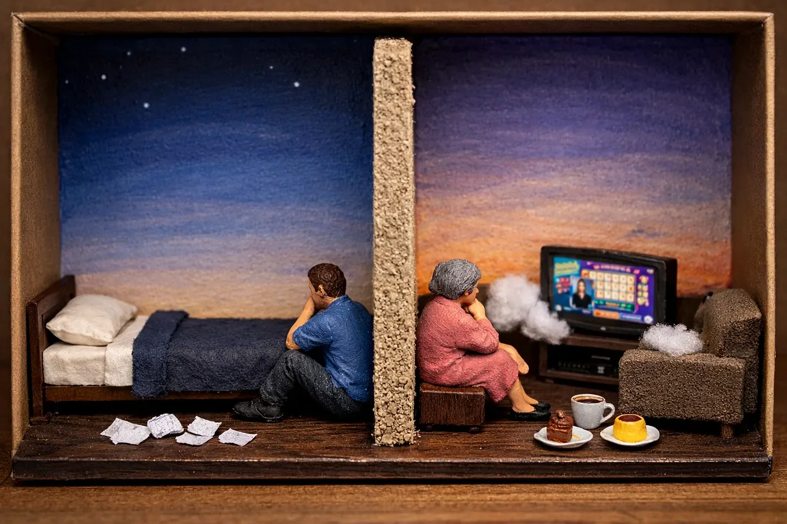

잠은 로사리오 부인이 옆집으로 이사 온 후 아주 먼 기억이 되었다.
[Sleep had become a distant memory since Mrs. Rosario moved in next door.]
그녀의 TV는 시도 때도 없이 퀴즈 쇼를 내보냈고, 그 덕에 새벽 2시 17분에 들려온 그녀의 흐느낌도 아주 또렷하게 들을 수 있었다.
[Her TV blared game shows at all hours, which is why I was fully awake to hear her sobbing clearly at 2:17 AM.]
그 소리는 억누른 숨소리였지만, 낮에 들리는 <더 프라이스 이즈 라이트>의 소음보다 훨씬 더 무겁게 다가왔다.
[It was a muffled sound of catching breath, yet it carried far more weight than the daytime cacophony of The Price is Right.]
나는 얇은 벽에 귀를 대고 서 있었다. 요즘의 나는 사람을 대하는 일이 서툴렀다.
[I pressed my ear against the thin wall. Dealing with people wasn’t exactly my specialty these days.]
우리의 관계는 3주 동안 문 밑으로 오고 간 쪽지로 정의되었다.
[Our relationship had been defined by three weeks of notes slipped under doors.]
그녀의 쪽지는 꽃무늬 편지지에 적힌 화려한 필기체였고, 내 것은 찢어진 공책에 적힌 퉁명스러운 문장이었다.
[Hers: elaborate cursive on floral stationery. Mine: terse sentences on torn notebook paper.]
흐느낌이 계속되었다. 나는 위로가 벽을 뚫고 전해지길 바라며 손바닥을 벽에 댔다.
[The sobbing continued. I pressed my palm against the wall, hoping comfort could transfer through the drywall.]
“로사리오 부인?” 나도 모르게 불쑥 말이 튀어 나갔다. “괜찮으세요?”
[”Mrs. Rosario?” The words slipped out before I could stop them. “Are you okay?”]
울음소리가 뚝 그쳤다. 침묵이 우리 사이에 흘렀다.
[The crying stopped abruptly. Silence stretched between us.]
“맙소사(Dios mío)!” 벽 너머로 당황한 목소리가 들려왔다. “노아? 들려요?”
[”Dios mío!” Her embarrassed voice came through the wall. “Noah? You can hear me?”]
“제가 깨어 있어서요. 부인의... 음... 배나 화이트 씨가 밤 11시엔 너무 활기차서요.”
[”Only because I’m awake. Your... um... Vanna White is very enthusiastic at 11 PM.”]
물기 어린 웃음소리가 들렸다. “시끄러운 건 팻 세이잭이에요. 배나는 그냥 글자판 돌리면서 예쁘게 서 있을 뿐이죠.”
[A watery laugh answered. “Pat Sajak is the loud one. Vanna just turns letters and looks pretty.”]
“그렇군요. 퀴즈 쇼는 잘 몰라서요.”
[”Right. Game shows aren’t my strong suit.”]
다시 침묵.
[More silence.]
“괜찮으신가요?” 내가 다시 물었다.
[”Are you okay?” I asked again.]
“아니요,” 그녀가 담담하게 대답했다. “하지만 인생이 다 그런 거 아니겠어요? 안 괜찮을 때도 있는 거죠.”
[”No,” she answered simply. “But that’s life, no? Sometimes you’re not okay.”]
나는 침대 머리맡, 우리를 가르는 벽에 등을 기대고 앉았다. “이야기... 하실래요?”
[I sat against the wall that separated us. “Do you... want to talk about it?”]
“벽에 대고요? 무슨 고해성사처럼?”
[”Through a wall? Like a confession?”]
“새벽 2시에 치료사한테 문자 보내고 자동 응답 받는 것보단 낫잖아요.”
[”Better than texting your therapist at 2 AM and getting an automated response.”]
이번엔 진짜 웃음소리가 들렸다. “치료사도 있어요?”
[This time the laugh sounded genuine. “You have a therapist?”]
“요즘 다들 있지 않나요?”
[”Doesn’t everyone these days?”]
“내 나이엔 없어요. 우린 그냥 촛불 켜고 성인들에게 기도하죠.”
[”Not at my age. We just light candles and pray to saints.”]
“효과가 있던가요?”
[”How’s that working out?”]
“새벽 2시에 벽 보고 울고 있으니, 말 다했죠.”
[”Well, I’m crying at 2 AM talking to a wall, so you tell me.”]
나도 모르게 미소가 지어졌다.
[I smiled despite myself.]
“오늘이... 결혼기념일이었어요,” 그녀가 말을 이었다. “47주년. 에르네스토 없이 맞는 첫 번째 기념일이죠.”
[”Today is... was... my anniversary,” she continued. “Forty-seven years. The first one without Ernesto.”]
그녀의 말이 가슴에 묵직하게 내려앉았다. “유감입니다.”
[The weight of her words settled in my chest. “I’m sorry.”]
“미안해하지 말아요. 감사해야지. 시간은 가장 소중한 거예요, 노아. 하루 종일 두들기는 그 비싼 컴퓨터보다 더.”
[”Don’t be sorry. Be grateful. Time is the most precious thing, Noah. More than that fancy computer you type on all day.”]
“그렇게 비싼 거 아니에요.”
[”It’s not that fancy.”]
“그 말이 제일 중요하게 들렸어요? 아이고, 정말 못 말리겠네.”
[”That’s the part you focused on? Ay, you’re hopeless.”]
나는 웃음을 터뜨렸다. “그런가 봐요.”
[I laughed. “Probably.”]
“그런데 왜 안 자요? 내 TV 소리 때문만은 아닐 텐데.”
[”Why are you awake at this hour? Besides my TV habits.”]
진실을 말하는 건 위험하게 느껴졌지만, 벽을 통해 말하는 건 어쩐지 더 쉬웠다.
[Truth felt dangerous, but speaking through a wall made it easier somehow.]
“사고 이후로 잠을 잘 못 자요.”
[”I don’t sleep much anymore. Not since the accident.”]
“무슨 사고였는데요?”
[”What accident?”]
“차 사고였어요. 1년 반 전이죠. 제가 운전했어요.”
[”Car crash. Eighteen months ago. I was driving.”]
벽 너머의 침묵이 달라졌다. 주의 깊은 침묵이었다.
[The silence changed. It became attentive.]
“약혼녀가 옆에 있었어요. 그녀는... 살아남지 못했죠.”
[”My fiancée was with me. She... didn’t make it.”]
“아, 저런(Mijo). 정말 안됐네요.”
[”Ah, mijo. I’m so sorry.”]
“네.” 목이 메어왔다. “그래서 치료사가 필요한 거죠.”
[”Yeah.” My throat tightened. “Hence the therapist.”]
그녀가 작게 콧노래 같은 소리를 냈다. “그럼 우리 둘 다 사랑 때문에 깨어 있는 거네요.”
[She hummed softly. “So we’re both awake because of love.”]
“그런 셈이네요.”
[”I guess we are.”]
“그녀 이야기를 해봐요.”
[”Tell me about her.”]
“네?”
[”What?”]
“약혼녀요. 이름이 뭐였어요?”
[”Your fiancée. What was her name?”]
아무도 내게 그걸 묻지 않았다. 사람들은 내 상처를 건드릴까 봐 그 주제를 피해 다녔다.
[No one had asked me that. People tiptoed around the subject, afraid to trigger me.]
“엘라이자요,” 내 입에서 나온 그녀의 이름이 낯설게 느껴졌다. “이름은 엘라이자였어요.”
[”Eliza,” I said, her name feeling rusty in my mouth. “Her name was Eliza.”]
“아름다운 이름이네요. 그녀도 아름다웠나요?”
[”Beautiful name. Was she beautiful too?”]
“네. 하지만 뻔한 미인은 아니었어요. 웃을 때 입매가 비뚤어졌는데, 그게 얼굴 전체를 환하게 만들었죠. 그리고 윙크를 못했어요. 그냥 한쪽 눈을 세게 깜빡거렸죠.”
[”Yeah. But not in the obvious way. She had a crooked smile that lit up her whole face. And she couldn’t wink—she’d just blink really hard with one eye.”]
로사리오 부인이 웃었다. “에르네스토는 손가락 딱딱 소리를 못 냈어요. 47년 동안 시도했지만, 소리는 안 나고 엄지가 미끄러지는 소리만 났죠.”
[Mrs. Rosario laughed. “Ernesto couldn’t snap his fingers. Forty-seven years of trying, never made a sound. Just his thumb sliding off.”]
우리는 동이 틀 때까지 벽을 사이에 두고 이야기를 나눴다. 엘라이자의 끔찍한 요리 실력과 에르네스토의 못생긴 넥타이 수집품에 대해. 슬픔과 사랑, 그리고 한순간에 변해버리는 인생의 묘한 방식들에 대해.
[We talked through the wall until dawn broke. About Eliza’s terrible cooking and Ernesto’s ugly ties. About grief, love, and how life changes in an instant.]
새벽 5시쯤 되자 그녀의 목소리가 졸리게 들렸다.
[Around 5 AM, her voice grew tired.]
“로사리오 부인?”
[”Mrs. Rosario?”]
“음?”
[”Hmm?”]
“내일은 <휠 오브 포춘> 소리 좀 줄여주실 수 있나요? 조금만요.”
[”Could you turn down Wheel of Fortune tomorrow? Just a little?”]
“나를 카르멘이라고 부른다면요.”
[”Only if you call me Carmen.”]
“그럴게요.”
[”Deal.”]
“그리고 노아?”
[”And Noah?”]
“네?”
[”Yeah?”]
“언제 커피 한잔해요. 직접 만나서. 내 TV 쇼는 같이 봐야 더 재밌거든요.”
[”Maybe we have coffee sometime. In person. My shows are better with company.”]
나는 망설였다. “전 같이 있기에 재미있는 사람은 아닌데요.”
[”I hesitated. “I’m not great company.”]
“나도 그래요. 그래서 우리가 어울리는 거죠. 깨진 항아리 두 개도 잘 맞추면 물을 담을 수 있답니다.”
[”Neither am I. That’s why we match. Two broken pots can still hold water if you put them together right.”]
“원래 있는 속담인가요?”
[”Is that a saying?”]
“방금 내가 지어냈어요. 이제부터 속담이죠.”
[”I just made it up. It is now.”]
“나쁘지 않네요.”
[”It’s not bad.”]
다음 날 저녁, 관리인 구즈만 씨가 문을 두드렸다. 그는 수리 요청서를 들고 있었다.
[The next evening, Mr. Guzman, the manager, knocked on my door clutching a maintenance request.]
“켄파 씨, 소음 불만이 들어왔나요?”
[”Mr. Kenpa, complaint about noise?”]
나는 인상을 찌푸렸다. “전 불만 접수 안 했는데요.”
[”I frowned. “I didn’t file any complaint.”]
그는 종이를 들여다보았다. “여기 이렇게 적혀 있는데요. ‘4B호와 4C호 사이의 벽이 너무 두꺼움. 이웃 소리가 잘 안 들림.’ 방음이 덜 되길 원한다고요?”
[”He consulted his paper. “Says here: ‘Wall between 4B and 4C too thick. Hard to hear neighbor.’ You want less soundproofing?”]
그 뒤로 로사리오 부인—아니, 카르멘의 문이 열렸다. 그녀의 눈이 장난기 가득하게 빛났다.
[Behind him, Mrs. Rosario’s—Carmen’s—door opened. Her eyes twinkled mischievously.]
“아, 구즈만 씨. 망치 가져왔어요? 노아랑 그냥 창문을 하나 낼까 했거든요. 대화하기 편하게요.”
[”Ah, Mr. Guzman. Did you bring the sledgehammer? Noah and I thought we’d just put in a window. For conversation.”]
구즈만 씨는 벙어리처럼 입을 뻐끔거렸다. “아파트 사이에 창문이라니? 그건 건축법 위반입니다!”
[”Mr. Guzman gaped like a fish. “A window? Between apartments? That’s a code violation!”]
“농담이에요(Es una broma), 구즈만 씨.” 그녀가 내게 윙크를, 아니 한쪽 눈을 세게 깜빡여 보였다.
[”Es una broma, Mr. Guzman. A joke,” she said, blinking hard with one eye at me.]
가슴 한구석이 욱신거리면서도 묘한 반가움이 느껴졌다.
[My chest ached with unexpected recognition.]
“두 사람 다 이해가 안 가네요,” 구즈만 씨가 투덜거리며 돌아갔다.
[”I don’t understand you two,” he muttered, shuffling away.]
카르멘이 나를 보고 웃었다. “그래서, 올 거예요? 10분 뒤에 <제퍼디!> 시작해요. 플랑도 만들었는데.”
[”Carmen smiled. “Well? Coming over? Jeopardy! starts in ten minutes. I made flan.”]
나는 문지방 앞에 멈춰 섰다. 지난 몇 달간 넘지 못했던 보이지 않는 선이었다.
[”I hesitated at the threshold—the invisible line I hadn’t crossed in months.”]
“전 퀴즈 같은 거 젬병인데요.”
[”I’m terrible at trivia.”]
“완벽하네요. 정답은 내가 다 아니까, 감탄해 줄 사람만 있으면 돼요.”
[”Perfect. I know all the answers. I just need someone to be impressed.”]
“그건 자신 있죠.”
[”I think I can handle that.”]
복도를 가로질러 색색의 사진들로 가득 찬 그녀의 집으로 들어서자, 내 안의 무언가가 녹아내리기 시작했다.
[As I stepped into her colorful apartment crowded with photos, something inside me began to thaw.]
마치 꽁꽁 얼어붙었던 수도관이 마침내 제 역할을 기억해 낸 것처럼.
[Like a frozen pipe finally remembering its purpose.]
“에르네스토가 늘 뭐라고 했는지 알아요?” 카르멘이 찰랑거리는 플랑 접시를 건네며 말했다.
[”You know what Ernesto always said?” Carmen handed me a plate with wobbly flan.]
“우주가 가장 필요할 때 딱 맞는 사람을 보내준다고 했죠.”
[”He said the universe sends the right people when you need them most.”]
“그 사람이 벽 반대편에 있어도요?”
[”Even if they’re on the other side of a wall?”]
“특히 그때요.” 그녀가 내 손등을 토닥였다. “가끔은 벽이 무너질 때의 기분을 알기 위해 벽이 먼저 필요한 법이거든요.”
[”Especially then.” She patted my hand. “Sometimes we need the wall first, so we can feel what it’s like when it comes down.”]
TV에서 알렉스 트레벡의 익숙한 목소리가 울려 퍼졌지만, 이번엔 그 소음이 전혀 싫지 않았다.
[The TV blared Alex Trebek’s familiar voice, but for once, I didn’t mind the noise.]